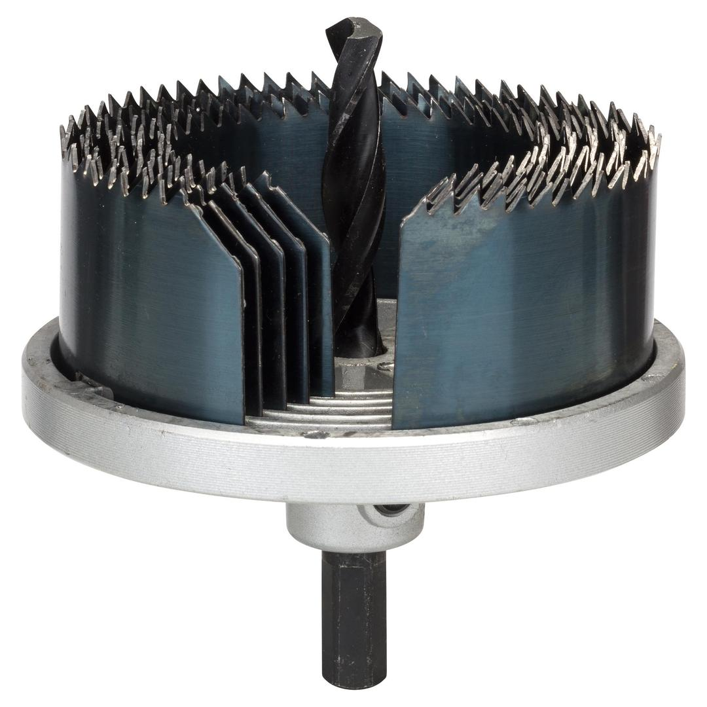
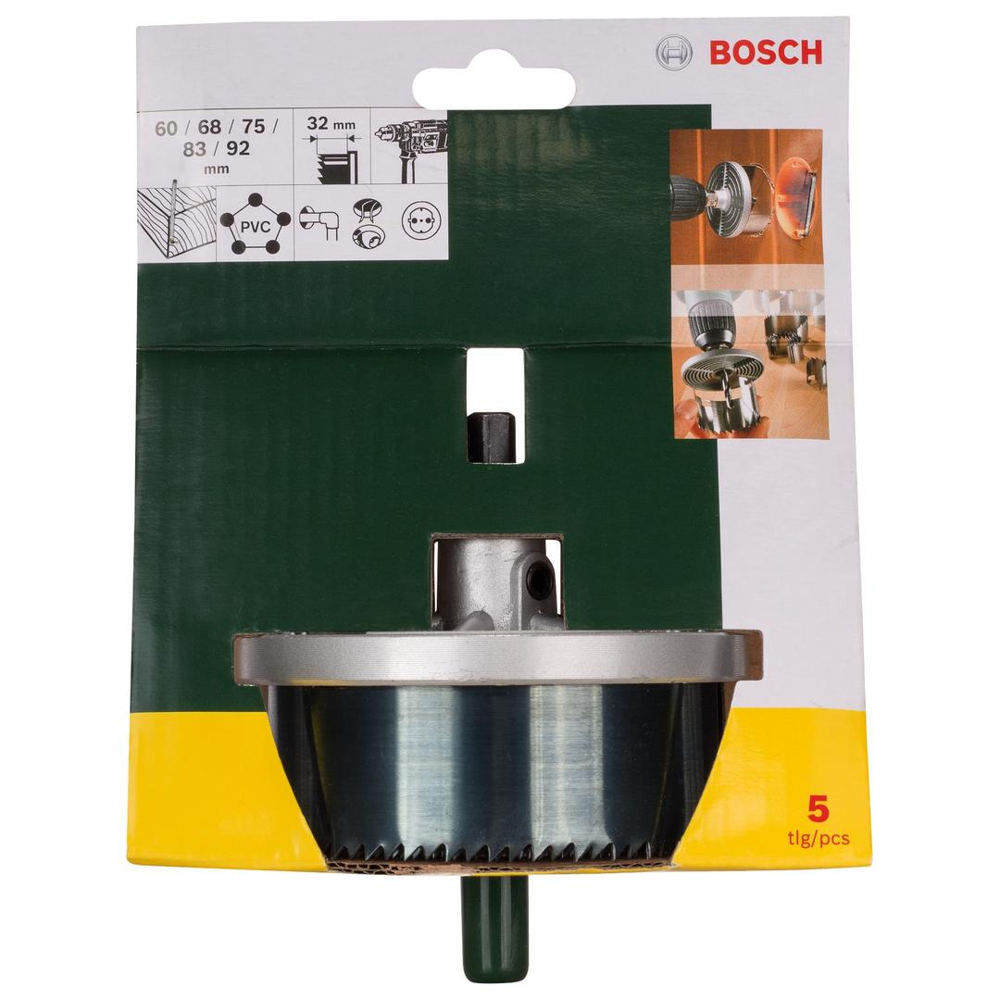

2607019451


| Contents |
5 hole cutters,
Ø 60/68/75/83/92 mm, L 32 mm |
| Packaging |
Printed card with Euro hole |
| Dimensions (lxwxh) |
185 x 140 x 105 mm |
| Weight |
0.45 kg |
| Pack quantity |
5 Pcs |
| Minimum order quantity |
1 Pcs |
DIY with Bosch quality: Hole sawing made easy.